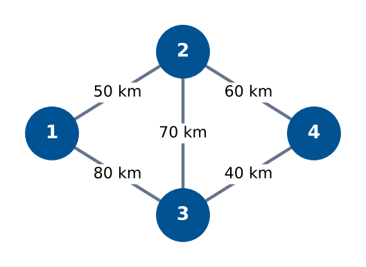
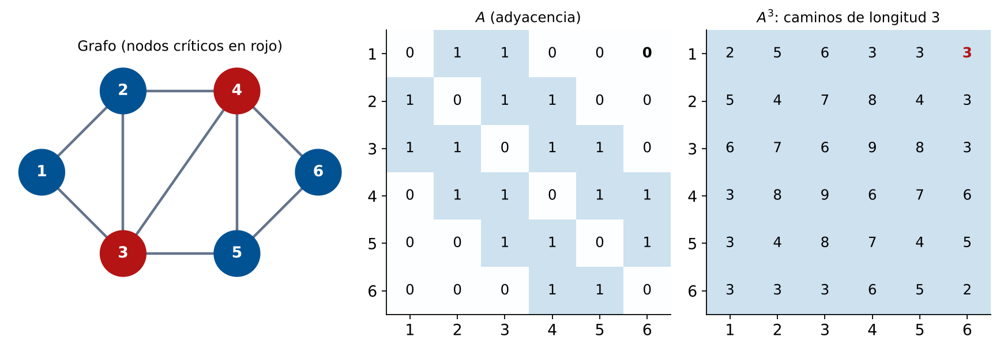
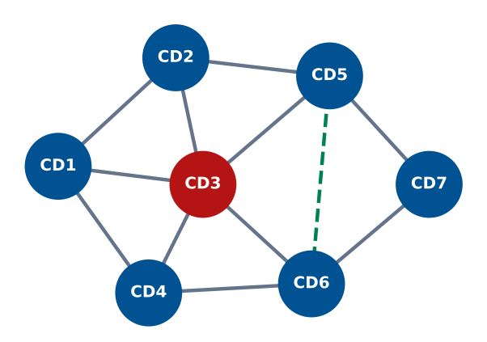

Matrices de Adyacencia y Redes Logísticas
Identificación de Nodos Críticos
Módulo 6 — Herramientas de Ingeniería
Matemáticas 2 — Clase 29
Cátedra de Matemáticas 2
Ingeniería en Logística
Clase 29
Contenidos de la Clase
- Objetivos de Aprendizaje
- ¿Por qué Modelar Redes con Matrices?
- Conceptos Básicos de Grafos
- Matriz de Adyacencia: Definición
- Matriz de Pesos: Distancias y Costos
- Potencias de la Matriz de Adyacencia
- Nodo Crítico: Definición y Medidas
- Caso: Red de Distribución de 6 Nodos
- Imagen del Libro: Grafos y Matrices
- MATLAB: Construir y Visualizar Grafos
- MATLAB: Potencias de la Matriz y Caminos
- MATLAB: Análisis de Vulnerabilidad
- Caso: Red de Distribución Nacional
- Resumen: Herramientas de Análisis de Redes
- Punto de Decisión
- Tarea para la Clase 30
- Referencias
Objetivos de Aprendizaje
Al finalizar esta clase el estudiante será capaz de:
- Representar una red logística como grafo y construir su matriz de adyacencia.
- Interpretar las entradas de la matriz de adyacencia y la matriz de pesos.
- Calcular el grado de cada nodo y usarlo para identificar nodos críticos.
- Usar
graph y digraph en MATLAB para modelar y visualizar redes.
- Aplicar potencias de la matriz de adyacencia para contar caminos.
- Decidir qué nodo es crítico y proponer estrategias de redundancia.
Conexión con el curso
Módulos 1-2: matrices como sistemas de ecuaciones.
Clase 29: matrices como representación de redes.
La misma herramienta algebraica, una nueva interpretación.
¿Por qué Modelar Redes con Matrices?
Pregunta práctica
Una empresa tiene 6 depósitos interconectados.
¿Qué ocurre si el depósito central falla?
¿Hay caminos alternativos? ¿Cuántos pasos toma llegar de A a D?
Responder estas preguntas requiere
- Representar la red de forma matemática
- Operar algebraicamente sobre esa representación
- Extraer información estructural (nodos críticos, caminos, conectividad)
La matriz de adyacencia captura toda la estructura de la red.
Conceptos Básicos de Grafos
Definiciones
Un
grafo \(G=(V,E)\) consta de:
- \(V\): conjunto de vértices (nodos)
- \(E\): conjunto de aristas (arcos/conexiones)
Grafo no dirigido: las aristas no tienen sentido.
Digrafo: las aristas tienen dirección (arco).
Grafo ponderado: cada arista tiene un peso.
En logística
- Vértices = depósitos, plantas, clientes
- Aristas = rutas de transporte
- Pesos = distancia, tiempo, costo, capacidad
- Dirección = sentido del flujo (arco)
Ejemplo: red de 4 depósitos

Matriz de Adyacencia: Definición
Definición
Para un grafo con \(n\) vértices, la matriz de adyacencia \(A \in \mathbb{R}^{n\times n}\) es:
\[ A_{ij} = \begin{cases} 1 & \text{si existe arista del nodo } i \text{ al nodo } j \\ 0 & \text{en caso contrario} \end{cases} \]
Para grafos no dirigidos: \(A\) es simétrica (\(A_{ij} = A_{ji}\)).
Para digrafos: \(A_{ij} = 1\) significa arco de \(i\) hacia \(j\).
Para el grafo de 4 depósitos:
\[ A = \begin{pmatrix} 0 & 1 & 1 & 0 \\ 1 & 0 & 1 & 1 \\ 1 & 1 & 0 & 1 \\ 0 & 1 & 1 & 0 \end{pmatrix} \quad \begin{array}{l} \text{Nodo 1 conecta con 2, 3} \\ \text{Nodo 2 conecta con 1, 3, 4} \\ \text{Nodo 3 conecta con 1, 2, 4} \\ \text{Nodo 4 conecta con 2, 3} \end{array} \]
Grado de un nodo: número de conexiones.
\(\text{grado}(i) = \sum_j A_{ij}\) (suma de la fila \(i\)).
Nodo 2 y 3 tienen grado 3 (los más conectados).
Matriz de Pesos: Distancias y Costos
Matriz de pesos (o costos)
\[ W_{ij} = \begin{cases} w_{ij} & \text{si existe arista de } i \text{ a } j \text{ con peso } w_{ij} \\ 0 \text{ o } \infty & \text{si no hay conexión directa} \end{cases} \]
Para la red de 4 depósitos (distancias en km):
\[ W = \begin{pmatrix} 0 & 50 & 80 & \infty \\ 50 & 0 & 70 & 60 \\ 80 & 70 & 0 & 40 \\ \infty & 60 & 40 & 0 \end{pmatrix} \]
Interpretación
\(W_{13} = 80\) km: la ruta directa del depósito 1 al 3 tiene 80 km.
\(W_{14} = \infty\): no hay ruta directa de 1 a 4 (se debe pasar por 2 o 3).
La diagonal es 0 (distancia de un nodo a sí mismo).
Potencias de la Matriz de Adyacencia
Propiedad fundamental
\((A^k)_{ij}\) = número de caminos de longitud exactamente \(k\) del nodo \(i\) al nodo \(j\).
Para el grafo de 4 depósitos:
\[ A^2 = A \cdot A = \begin{pmatrix} 2 & 1 & 1 & 2 \\ 1 & 3 & 2 & 1 \\ 1 & 2 & 3 & 1 \\ 2 & 1 & 1 & 2 \end{pmatrix} \]
Interpretaciones
- \((A^2)_{14} = 2\): hay 2 caminos de longitud 2 del nodo 1 al 4. (1→2→4 y 1→3→4.)
- \((A^2)_{22} = 3\): hay 3 caminos de longitud 2 del nodo 2 a sí mismo. (Ciclos de longitud 2.)
- La diagonal de \(A^2\) da el grado de cada nodo.
Uso en logística
\(A^k\) permite identificar cuántas rutas alternativas existen entre dos depósitos con exactamente \(k\) transbordes. Útil para planificar rutas de contingencia.
Nodo Crítico: Definición y Medidas
Un nodo es "crítico" si su eliminación
- Desconecta partes de la red
- Reduce significativamente la conectividad
- Aumenta las distancias mínimas entre nodos
- Tiene muchas conexiones (hub)
Medidas de centralidad
- Grado: número de conexiones directas.
- Intermediación: cuántos caminos mínimos pasan por ese nodo.
- Cercanía: qué tan rápido llega a todos los demás.
El nodo 3 es el único puente entre {1, 2} y {4, 5}: si falla, la red se divide en dos componentes.
Caso: Red de Distribución de 6 Nodos
Red con 6 depósitos (no dirigida):
\[ A = \begin{pmatrix} 0&1&1&0&0&0\\ 1&0&1&1&0&0\\ 1&1&0&1&1&0\\ 0&1&1&0&1&1\\ 0&0&1&1&0&1\\ 0&0&0&1&1&0 \end{pmatrix} \]
Nodos 3 y 4 tienen grado 4: son los más conectados.
Si uno de ellos falla, la red pierde 4 conexiones directas.
Verificación con eliminación
Si se elimina el nodo 3 (y sus aristas), el nodo 1 queda con grado 1 (solo conectado a 2). La red se vuelve más vulnerable.
Recomendar redundancia en los nodos 3 y 4.
Grafos y Matrices: red de 6 depósitos

\((A^3)_{16}=3\): hay 3 caminos de longitud 3 del nodo 1 al 6 (1→2→4→6, 1→3→4→6, 1→3→5→6)
Generar la imagen con MATLAB
Ejecutar la Sección 2 del script clase29_redes.m para generar la visualización de la red con graph(A) y exportar como PNG.
MATLAB: Construir y Visualizar Grafos
% Matriz de adyacencia (red de 6 depositos)
A = [0 1 1 0 0 0;
1 0 1 1 0 0;
1 1 0 1 1 0;
0 1 1 0 1 1;
0 0 1 1 0 1;
0 0 0 1 1 0];
% Crear el grafo
G = graph(A);
% Grado de cada nodo
grados = degree(G);
fprintf('Grados de los nodos:\n')
for i = 1:6
fprintf(' Nodo %d: grado %d\n', i, grados(i))
end
[max_g, nodo_critico] = max(grados);
fprintf('Nodo mas critico: Nodo %d (grado %d)\n', nodo_critico, max_g)
% Visualizacion
figure('Position',[50 50 700 500]);
h = plot(G, 'Layout','force', 'NodeLabel', 1:6,...
'NodeFontSize', 12, 'MarkerSize', 10,...
'NodeColor', [0 0.45 0.74], 'EdgeColor', [0.5 0.5 0.5]);
% Resaltar nodo critico en rojo
highlight(h, nodo_critico, 'NodeColor', 'r', 'MarkerSize', 14)
title('Red Logistica: Nodo Critico en Rojo')
Salida esperadaGrados: 2 3 4 4 3 2 · Nodo mas critico: Nodo 3 (grado 4) (empata con el nodo 4; max devuelve el primero).
MATLAB: Potencias de la Matriz y Caminos
Salida esperada: caminos de longitud 2 de 1 a 6: 0; de longitud 3: 3. Distancias promedio (incluye el propio nodo): 1.50 1.17 1.00 1.00 1.17 1.50 ⇒ nodo más central: Nodo 3 (empata con el 4).
% Potencias de la matriz de adyacencia
A2 = A^2;
A3 = A^3;
fprintf('Caminos de longitud 2 (A^2):\n')
disp(A2)
fprintf('Caminos de longitud 3 (A^3):\n')
disp(A3)
% Caminos entre nodo 1 y nodo 6
fprintf('Caminos de longitud 2 de nodo 1 a nodo 6: %d\n', A2(1,6))
fprintf('Caminos de longitud 3 de nodo 1 a nodo 6: %d\n', A3(1,6))
% Distancias minimas entre todos los pares de nodos
D = distances(G);
fprintf('\nMatriz de distancias minimas (saltos):\n')
disp(D)
% Nodo con menor distancia promedio a todos (mas central)
dist_media = mean(D, 2);
[~, nodo_central] = min(dist_media);
fprintf('Nodo mas central (menor distancia promedio): Nodo %d\n', nodo_central)
fprintf('Distancias promedio por nodo:\n')
for i = 1:6
fprintf(' Nodo %d: %.2f saltos promedio\n', i, dist_media(i))
end
MATLAB: Análisis de Vulnerabilidad
Salida esperada: al eliminar cualquier nodo la red queda con 1 componente (ningún nodo la desconecta); aristas perdidas = grado: 2 3 4 4 3 2. Los nodos 3 y 4 son los que más rutas eliminan.
% Analisis de vulnerabilidad: eliminar cada nodo y medir impacto
fprintf('=== ANALISIS DE VULNERABILIDAD ===\n')
fprintf('%-10s %-18s %-18s\n','Nodo','Componentes','Aristas perdidas')
fprintf('%s\n', repmat('-',46,1))
for nodo_falla = 1:6
% Eliminar nodo y sus aristas
nodos_rest = setdiff(1:6, nodo_falla);
A_red = A(nodos_rest, nodos_rest);
G_red = graph(A_red);
% Contar componentes conectados
comp = conncomp(G_red);
n_comp = max(comp);
% Aristas perdidas
aristas_perdidas = sum(A(nodo_falla,:));
critico = '';
if n_comp > 1, critico = 'RED DESCONECTADA'; end
fprintf('%-10d %-18d %-18d %s\n', ...
nodo_falla, n_comp, aristas_perdidas, critico);
end
% Grafo dirigido (digrafo): red de suministro unidireccional
s_arc = [1 1 2 2 3 4]; % nodo origen
t_arc = [2 3 3 4 5 5]; % nodo destino
pesos = [50 80 70 60 40 90]; % km
DG = digraph(s_arc, t_arc, pesos);
figure('Position',[50 50 600 420])
plot(DG,'Layout','layered','EdgeLabel',pesos,...
'NodeColor',[0 0.69 0.31],'ArrowSize',12,'LineWidth',1.5)
title('Red de Suministro Dirigida')
Caso: Red de Distribución Nacional
Una empresa tiene 7 centros de distribución conectados
- CD1 (capital): conectado a CD2, CD3, CD4
- CD2 (norte): conectado a CD1, CD3, CD5
- CD3 (centro): conectado a CD1, CD2, CD4, CD5, CD6
- CD4 (sur): conectado a CD1, CD3, CD6
- CD5 (este): conectado a CD2, CD3, CD7
- CD6 (oeste): conectado a CD3, CD4, CD7
- CD7 (remoto): conectado a CD5, CD6

Línea verde discontinua: ruta de contingencia propuesta CD5–CD6
| Nodo | Grado |
|---|
| CD1 | 3 |
| CD2 | 3 |
| CD3 | 5 |
| CD4 | 3 |
| CD5 | 3 |
| CD6 | 3 |
| CD7 | 2 |
CD3 es el nodo crítico (grado 5).
Decisión: ¿Qué hacer con el nodo crítico?
Si CD3 falla, la red sigue conectada (CD7 se abastece por CD5–CD2 o CD6–CD4), pero se pierden 5 de las 11 rutas y la distancia media entre centros sube de 1.52 a 1.80 saltos (+18%).
Recomendación: agregar la conexión directa CD5–CD6 como ruta de contingencia: con CD3 caído, la distancia media baja a 1.60 saltos. Además, CD7 (grado 2) quedaría aislado solo si fallaran a la vez CD5 y CD6.
Resumen: Herramientas de Análisis de Redes
| Herramienta | Fórmula/Función | Información obtenida | MATLAB |
|---|
| Matriz adyacencia | \(A_{ij}\in\{0,1\}\) | Conexiones directas | graph(A) |
| Grado del nodo | \(\sum_j A_{ij}\) | Conectividad local | degree(G) |
| Potencias \(A^k\) | Multiplicación | Caminos de longitud \(k\) | A^k |
| Distancias mín. | Floyd-Warshall | Camino más corto | distances(G) |
| Componentes | Búsqueda DFS | Partes conectadas | conncomp(G) |
| Centralidad | Suma de distancias | Nodo más central | centrality(G) |
Nodo crítico: cómo identificarlo
- Mayor grado (más conexiones directas).
- Al eliminarlo, la red se desconecta (componentes > 1).
- Menor distancia promedio a todos los demás (centralidad).
Punto de Decisión
Pregunta de Cierre
Tu red de distribución tiene 7 centros. El análisis muestra que CD3 tiene grado 5 y que su caída elimina 5 de las 11 rutas y aumenta un 18% la distancia media (la red sigue conectada, pero más frágil). El costo de agregar una ruta de contingencia CD5-CD6 es $50.000.
¿Intervendrías el sistema agregando la ruta de contingencia, o lo mantendrías como está? ¿Qué información adicional pedirías antes de decidir?
A favor de intervenir
Sin CD3, todo el flujo este–oeste depende de CD7 y de rutas más largas; una segunda falla (CD5 o CD6) dejaría a CD7 con una única ruta. Si el costo de esas demoras/rupturas supera $50.000/año, conviene intervenir.
Información adicional
Volumen de CD7, frecuencia de fallas de CD3, costo de operación de la ruta CD5-CD6.
Alternativa
Agregar inventario de seguridad en CD7 para sobrevivir 2 semanas sin suministro vs costo de la ruta.
Tarea para la Clase 30
Lecturas
- Lay, Cap. 5.1-5.2: Eigenvalores y eigenvectores
- Pensar: si la matriz de adyacencia tiene eigenvalores, ¿qué significan?
Ejercicio preparatorio
Con el script
clase29_redes.m:
- Construir la red de 7 centros de distribución del caso.
- Calcular el grado de cada nodo y el nodo más crítico.
- Simular la falla de CD3: verificar con
conncomp que la red sigue conectada y medir el aumento de la distancia media.
- Agregar la arista CD5-CD6 y re-verificar la conectividad.
- Calcular las distancias mínimas entre todos los pares antes y después.
Próxima clase 30
Eigenvalores (conceptual) — relación con la estabilidad de sistemas logísticos
Referencias
- Lay, D.C., Lay, S.R., McDonald, J.J. (2016). Álgebra Lineal y sus Aplicaciones (5a ed.). Pearson. Cap. 10 (Aplicaciones a grafos — si disponible) o material propio.
- Diestel, R. (2017). Graph Theory (5th ed.). Springer. Cap. 1 (The Basics).
- Newman, M.E.J. (2010). Networks: An Introduction. Oxford University Press. Cap. 6 (Matrix Methods).
- MATLAB Documentation.
graph, digraph, degree, distances, conncomp, centrality. https://www.mathworks.com/help/matlab/graph-and-network-algorithms.html
- Material propio: Script
clase29_redes.m.
Matemáticas 2 — Clase 29 | Matrices de Adyacencia y Redes
¡Hasta la próxima clase!
Clase 30: Eigenvalores y Estabilidad de Sistemas
contacto@mat2logistica.edu